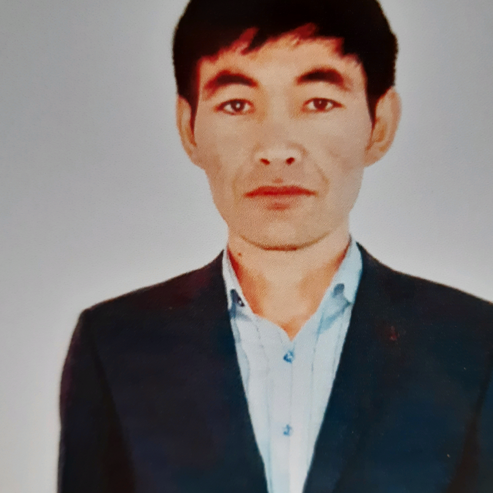

|  |
Мамбеталин Жандарбек Танбаевич – Ойыл ауданы Қараой ауылының Қараой мектеп – балабақшасының математика пәнінің мүғалімі. Еңбек өтілі - 4 жыл, педагог- сарапшы. Ұйымдастырушылық қабілеті жоғары шебер ұстаз.
Жетістіктері:
-Математика пәні мұғалімдері арасында өткен облыстық шығармашылық байқауынан І дәрежелі диплом- 2020 жыл;
-Облыстық пәндік олимпиада- ІІІ дәрежелі диплом- 2019 жыл. |